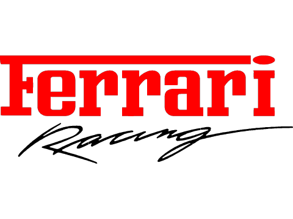
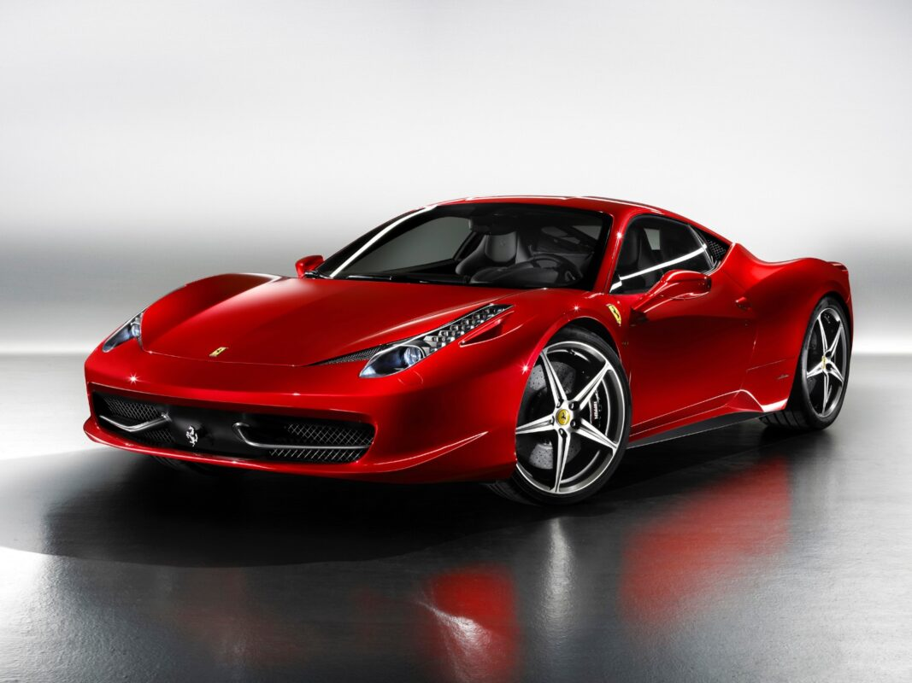

Fue develado a la prensa el 28 de julio de 2009 y presentado en el Salón del Automóvil de Fráncfort de 2009. Fue diseñado por Donato Coco en colaboración con Pininfarina, como los últimos modelos de Ferrari. Su estilo y características fueron diseñados para la eficiencia aerodinámica, produciendo una carga de 140 kg (309 libras) a 200 km/h (124 mph). Para el interior se han utilizado los aportes del expiloto de Ferrari en Fórmula 1 Michael Schumacher,8 incluyendo un nuevo volante que incorpora muchas de las características y controles frente al conductor y no en el tablero, similar a los coches de carreras. Según la revista Autocar, se ha inspirado en el Ferrari Enzo y su automóvil concepto Mille Chili. De acuerdo con los estándares de los superdeportivos, la forma es extremadamente resbaladiza, con un coeficiente de arrastre de solamente 0,32. Se ha diseñado para ser el modelo más deportivo de Ferrari que afirma tener la mayor potencia específica para un motor naturalmente aspirado.
Su nombre código es "F142", cuya denominación deriva de su planta motriz de 4,5 litros V8, para distinguirse del Ferrari California lanzado paralelamente. Tiene una silueta redondeada esculpida para una aerodinámica óptima y unos novedosos faros delanteros alargados con iluminación led. Ya en el frontal tiene unos aletines en la parrilla inferior, pero la trasera es todavía más radical y deportiva con un difusor dividido en dos piezas y una triple salida de escape centrada que se convertirá en uno de los detalles característicos del sucesor del Ferrari F430 y que, según la propia marca, ofrecería el sonido característico que se espera de un Ferrari. Es el sustituto del F430 y, por lo tanto, el "nieto" del 360 Modena. Con estos precedentes, la firma ha apostado fuerte y parece que lo ha logrado, ya que su diseño es muy arriesgado, continuista en algunos elementos, pero con grandes variaciones.